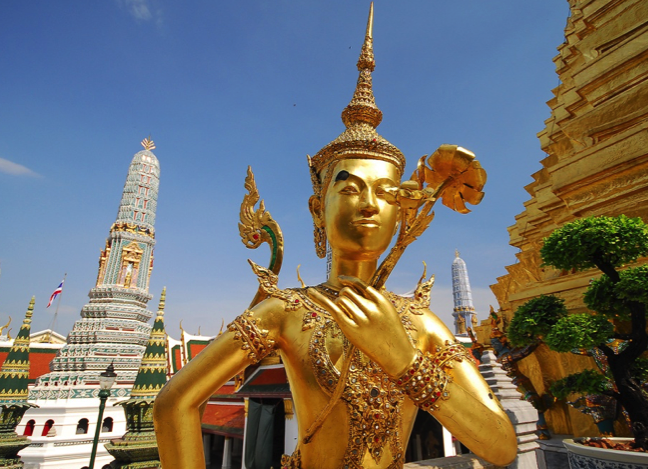

Venue
Symposium Venue
KX (Knowledge Exchange), KMUTT
King Mongkut's University of Technology Thonburi
110/1 Krung Thonburi Road, Banglamphulang,
Khlongsan, Bangkok 10600
Phone: (+66) 02 4709296
Website: http://www.kxchanges.com/
(Click bracket icon at top right to view a larger
map.)
Transportation
By BTS Train to KX
Take a train on BTS Silom line or BTS2 to either Krung
Thon Buri or Wongwian Yai BTS station. From there it is a
400-500 m walk along the westbound lane of Krung Thonburi
Road to the KX building.
By Taxi to KX
Direct the taxi to following address:
อาคารเคเอกซ์
มหาวิทยาลัยเทคโนโลยีพระจอมเกล้าธนบุรี
110/1 ถนนกรุงธนบุรี แขวงบางลำภูล่าง เขตคลองสาน กรุงเทพฯ
Taxi from the Airport to Hotels/KX/KMUTT
Bangkok has two international airports, Suvarnabhumi
International Airport (BKK) which handles the bulk of
long-haul international traffic and is some distance out
of town, and Don Mueang International Airport (DMK)
which handles low-cost carriers and is a bit closer to
town.
Here is some informal information about taking a taxi
from Suvarnabhumi International Airport (BKK): "A public
(metered) taxi will cost about 500 Baht, including toll
costs to come to the main KMUTT campus or near the venue
KX Building. Note that there is a 50 Baht surcharge for
taking a taxi from the airport and the passenger needs
to pay all tolls. Actually, it's a good way to break a
large bill by paying toll with it and getting
change. After arriving at the airport make your way to
the first floor (one floor down after exiting the
luggage area) and use the automated machines to obtain a
queue ticket for the taxi. There is a surcharge for a
larger taxi that can hold more luggage; follow the
appropriate sign for the correct queue." For more
information refer to this guide
on Suvarnabhumi
Airport Taxi Service.
From Don Mueang International Airport (DMK) the fare to
get to your hotel or to KX/KMUTT is lower, and should be
in the vicinity of 200-300 Baht. For more information
refer to this guide
on Don
Mueang Airport Transportation.
SIM Cards
When at the airport you may get a local SIM card for up
to 7 days, at least for data usage, as the cost is
really reasonable (i.e. cheap). At Suvarnabhumi
International Airport there are two booths along the
aisles after exiting the luggage area on the way to the
escalator/elevator (Gate 4) that goes to the first floor
— AIS and True. At Don Mueang airport there should
be similar facilities. In addition, SIM cards can be
easily purchased at 7-11 stores.
Accommodation
There are numerous hotels in Bangkok that can be booked
economically through popular booking sites such as
Trivago.com, Hotels.com, Booking.com etc. Most hotels
near a station of the BTS Silom line will be convenient
for reaching the symposium venue in a reasonably short
time. The following hotels are recommended as they are
near the symposium venue:
3-star
- Grand Tower Inn Sathorn Bangkok
4-star
- Sarasinee All Suites
- Centre Point Silom Hotel Bangkok
- Astera Sathorn Hotel
5-star
Places of Interest
Bangkok has numerous places of great interest to the
visitor. The Grand Palace, Wat Pho and Wat Arun are among
the top places to visit, but there is plenty more to see
and do. It is recommended to so some reading prior to
exploring Bangkok:

Symposium Banquet
Sortrel
Restaurant
Location
KX (Knowledge Exchange) Building
King Mongkut's University of Technology Thonburi,
110/1 Krung Thonburi Road, Banglamphulang,
Khlongsan, Bangkok 10600 Thailand
Email: vinfo@vinci-conf.org
Sponsored by:
Proceedings published by ACM: